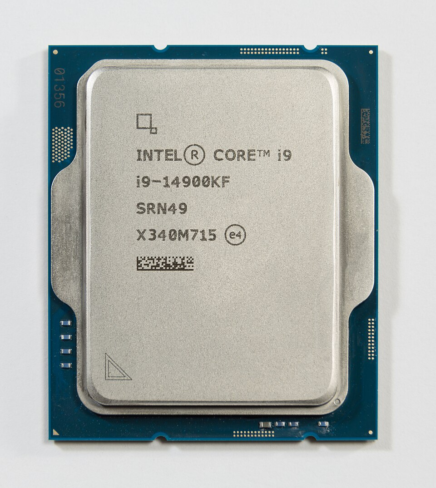

Клієнтські обчислення (Client Computing Group)

- Export Administration Regulations (EAR), 15 CFR 730-774
- Закон Шермана, розділ 2 (15 U.S.C. § 2)
- Договір про функціонування ЄС, стаття 102
Найбільший за виручкою напрям корпорації: процесори Intel Core для ноутбуків і настільних комп'ютерів, платформи для виробників обладнання, бездротові рішення
Зв'язок з державними органами: Бюро промисловості та безпеки (BIS) Міністерства торгівлі США - експортний контроль; Федеральна торгова комісія США (FTC) та Європейська комісія - антимонопольний нагляд за ринком процесорів